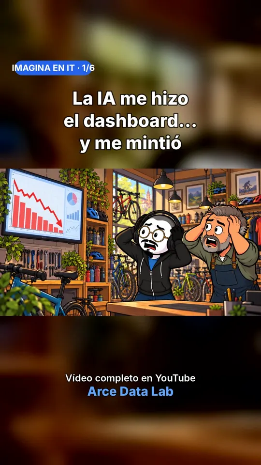
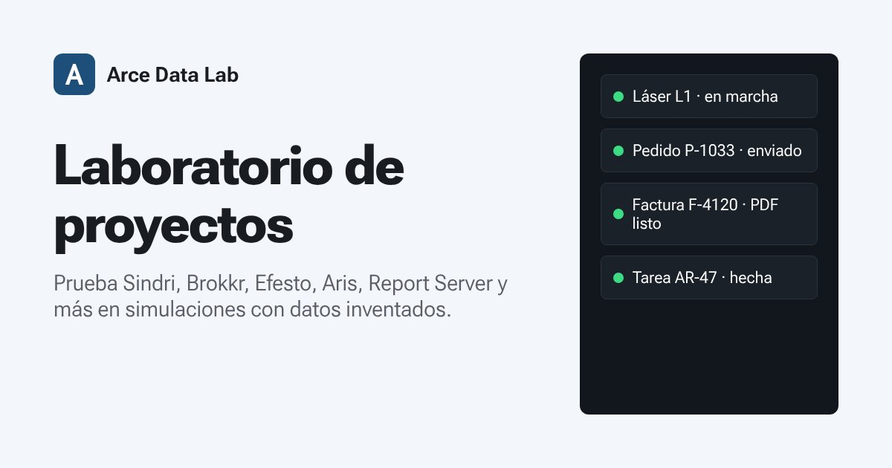
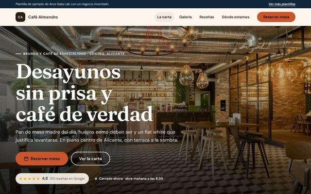

动态
我们正在做的事、最新发布的内容，以及在哪里关注我们。
正在进行
Ada 已投入使用我们的 AI 营销团队已经在为我们的社交频道准备内容。
Brokkr：平板上的 CRM为工业中小企业销售人员打造的 CRM，与 Sindri 相连。即将推出。
Club Byte给 8 到 12 岁孩子讲解科技，每周更新节目和短视频。
最新动态



我们在哪里发布
我们做的一切都会发布在这里。选择你最方便的平台关注我们。
LinkedIn 上
我写的关于 BI、数据和 AI 应用的内容（西班牙语）
Windows CMD 命令速查表
139,760 次展示
数据从业者必须掌握的 10 个术语
51,431 次展示
VBA，Excel 的智慧老爷爷
29,131 次展示
想在这里阅读全文？将打开 LinkedIn 的查看器，它会在你的浏览器中保存自己的 Cookie；按下按钮之前不会加载任何 LinkedIn 内容。 Cookie 政策（西班牙语）